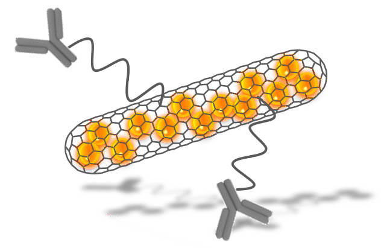

Press note: " A novel anticancer therapy system based on carbon nanocapsules"
- Details
- Created on 07 March 2016
A press note has been released by RADDEL network after the publication of a paper in Nanoscale based on the development of antibody-funcionalised carbon nanotubes filled with radioactive metals. The news have been highlighted in several media:
Here is the full extract of the press note:
"Researchers from the Materials Science Institute of Barcelona (ICMAB-CSIC) in collaboration with the Catalan Institute of Nanoscience and Nanotechnology (ICN2), the Institute of Molecular and Cellular Biology (IBMC-CNRS) and King’s College London (KCL) have developed a novel nanocarrier anti-cancer platform for the targeted delivery of radioactivity. The results, published in the journal Nanoscale, are part of a collaborative Marie-Curie Initial Training Network (ITN) (RADDEL), funded by the European Commission FP7 and coordinated by Dr. Gerard Tobias from the ICMAB-CSIC.
RADDEL aims to develop novel diagnostic and therapeutic tools based on nanocapsules in the form of filled carbon nanotubes.
Carbon nanotubes have already found many applications, being the most prominent one their use in composite materials for sport goods, which are commercially available. They are also attractive nanoplatforms in the biomedical field with a variety of applications that range from scaffolds to drug delivery vehicles. In this area, their use as radionuclide carriers for imaging and therapeutic purposes has been very limited.
Whereas the nanotube’s internal cavities offer a suitable environment for the encapsulation of payloads of interest, their high external surface can be used for the anchoring of targeting functionalities, thus providing selectivity to the nanocarriers.
In this study, the collaborators have combined the endohedral and exohedral modification of carbon nanotubes to design a novel targeted anticancer therapy system. The nanotubes were filled with the model non-radioactive materials SmCl3 and LuCl3 and sealed, followed by the external functionalization with the monoclonal antibody Cetuximab. Cetuximab targets Epidemial growth factor receptors (EGFR) that are overexpressed by several cancer cells.
The targeting efficacy was assessed in vitro for U87 EFGR+ cancer cells, and the nanocarrier was able to selectively accumulate into the cancer cells with no significant cytotoxicity observed. These results open up new frontiers in the development of novel nanomaterials for biomedical applications in the areas of cancer diagnosis and therapy. The network is currently assessing the in vivo performance of these nanocarriers by using the equivalent hot radioactive compounds."
Contact: This email address is being protected from spambots. You need JavaScript enabled to view it.
RADDEL project: http://projects.icmab.es/raddel/
Reference article:
C. Spinato, A. P. Ruiz de Garibay, M. Kierkowicz, E. Pach, M. Martincic, R. Klippstein, M. Bourgognon, J. T-W. Wang, C. Ménard-Moyon, K. T. Al-Jamal, B. Ballesteros, G. Tobias, A. Bianco; Design of antibody-functionalized carbon nanotubes filled with radioactivable metals towards a targeted anticancer therapy; Nanoscale, DOI: 10.1039/C5NR07923C (2016).
The research leading to these results has received funding from the People Programme (Marie Curie Actions) of the European Union's Seventh Framework Programme FP7/2007-2013/ under REA grant agreement n° 290023.
